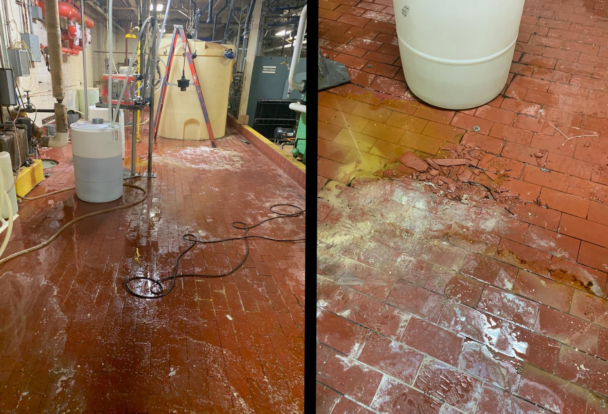
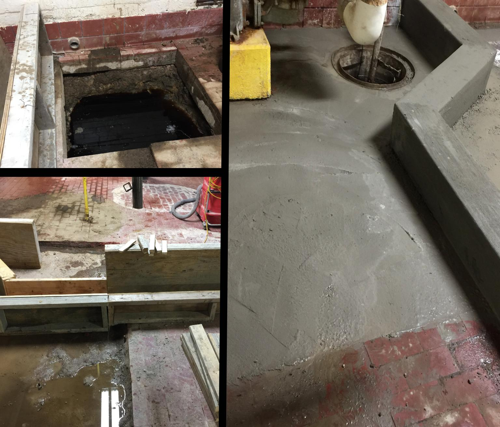
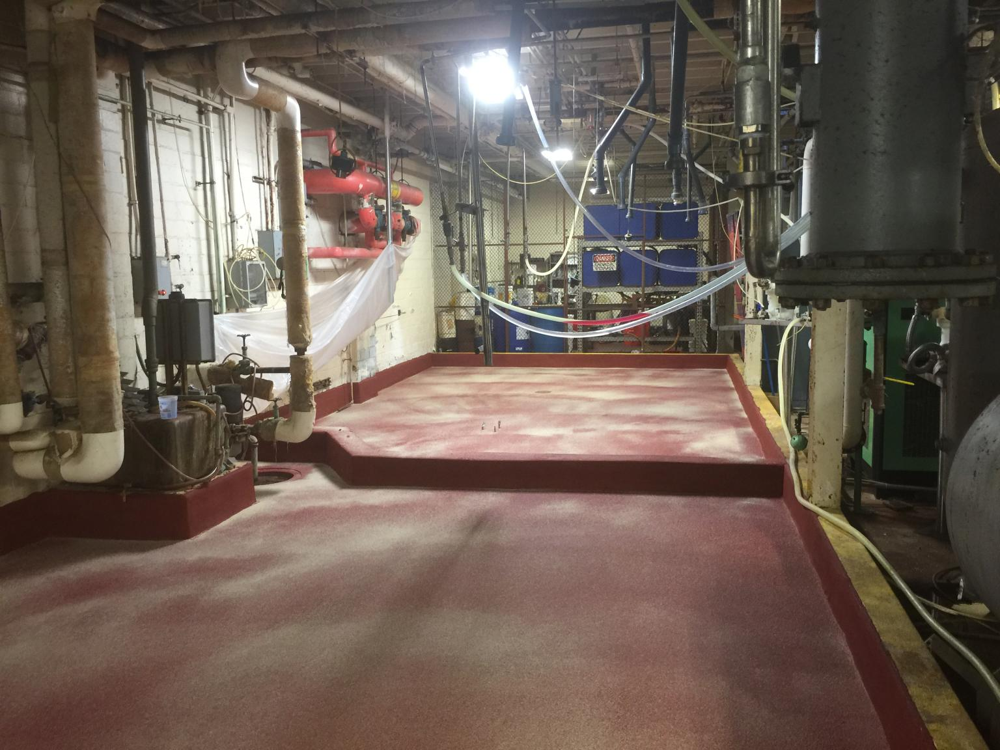

When a USDA-inspected facility has a chemical storage floor failure, they can't wait weeks for a contractor to schedule the work. They need it fixed now. Because SaniCrete manufactures, preps, and installs — all in-house — we were able to respond to this emergency and complete the entire project in 48 hours.
The Problem
The existing brick flooring in the chemical storage area had eroded under years of chemical exposure. Bricks were loose, grout was gone, and chemicals were penetrating into the substrate. With no secondary containment, a spill would have been a major environmental and safety issue.
The Build
We removed the eroded brick areas and filled with SaniBulk fast-drying polymer concrete. Then we installed a secondary below-grade collection sump and built a containment curb to separate different chemical zones. SaniCrete VR radius cove system sealed all floor-to-wall transitions.
The Result
SaniCrete SL 3/8" with broadcast finish went down over the entire area — providing chemical resistance, slip resistance, and a seamless surface that's easy to decontaminate. The containment curbing ensures that any spill is captured and directed to the sump instead of spreading to adjacent areas.
48 hours from start to finish. That's what happens when one company controls every aspect of the flooring process.